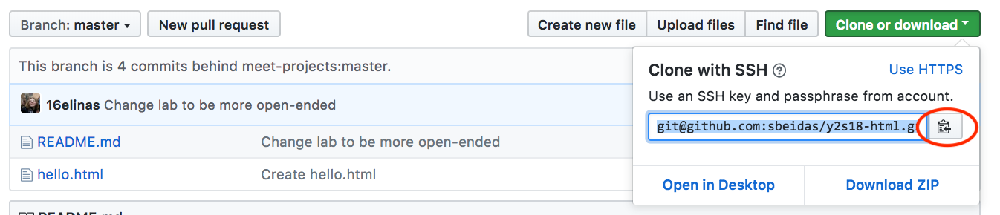

Y2l-bootstrap-lab
Before you start: Fork and clone this repository
-
Fork this repository by clicking "Fork" on this page:
-
Copy this repository's url by clicking the green clone button: 

Part 1: Bootstrap Grid
Edit exercise.html for this portion of the lab
- Create a table layout using bootrstrap grid that includes 3 types of animals of your choice. The table layout should look similar to this for all types of screens:
| Name | Image |
|---|---|
| Cat |  |
| Red Panda |  |
| Dolphin |  |
- Show your work to an instructor or TA!
Bonus Open the website you made then right click and inspect element. As you notice, the image isn't compatible with the screen size and can sometimes get out of the borders of the column that includes it. Google how to fix that. (hint: you need to make the image's width compatible with its parent)
Part 2: Bootstrap Components
Edit exercise.html for this portion of the lab
- Make a carousel that displays the images of the animals you listed previously.
- Add a "Primary" Button with the text Next, and a "Secondary"Button with the text "Previous"
- Show your work to an instructor or TA
Part 3: Bootstrap Calculator
Part 3.1
Edit calculator.html for this portion of the lab
- Open the calculator.html file in your browser (Chrome/ Firefox). What do you see?
- You are right! it's the ugliest thing you've seen all day. You're job is to make it look more like a calculator
- Using your knowledge about the Grid layout(rows, columns) and Bootstrap components (Buttons, inputs), make an interface for a calculator (out of inspiration? click here or here)
- The must haves for the calculator are, having buttons from 0-9, buttons for addition, subtraction, division, and multiplication, and textbox for showing the result
{kind=link}
{kind=link}
Part 3.2
Using Javascript, make the calculator work!